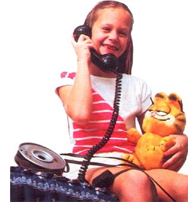
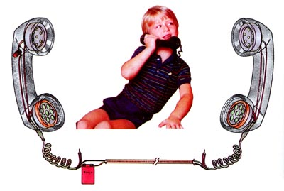
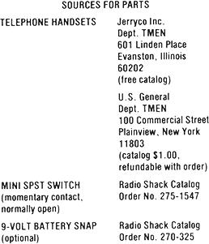

Wire up a miniature communication system. . . for your children or for yourself.
Toy communication systems are always sure to be a hit with the little ones in your family . . . but you can save your tin cans and string for a different project, because this one's made from real telephone parts! Yep, while flipping through the various supply catalogs that clutter our research facilities , we couldn't help but notice that used phone handsets-in perfectly good working order-were commonly available for as little as $3.00 and a bit of change.
It didn't take long, either, to figure out that a regular 9-volt transistor radio battery could be used to power the receivers, and that there really was a use for all that leftover twin-lead antenna wire we'd been hanging onto!
Of course, the tiny energizer would be drained in no time flat if the phones were left on constantly, so we wired a small momentary-contact switch (the normally open kind) into the circuit so that the equipment wouldn't be engaged unless a button was pushed.
Then, to keep everything in order, we wrapped our 50 feet or so of antenna lead around an old, empty bulk-wire spool (just about any holder would serve the same purpose equally well).
Don't be alarmed if you've never tackled an electronics project before, because this one's no big deal. By referring to our sim plified diagram, you can see that the telephone wires are color-coded, and only a few splices are required. If you don't want to solder these joints, you can merely strip the insulation from the leads, twist the bare wires together, and wrap the connections with electrical tape. (In this case, the only problem areas might be the battery terminals, and those junctions can be made by using standard 9-volt battery clips . . . the variety that's commonly found in transistor radios.)
To install the switch, you'll have to unscrew the mouth- and earpieces from one handset and drill a hole of an appropriate size through the housing at the point where your thumb would fall naturally. (If you have difficulty threading the right wires through the receiver's handle, feel free to use individual lengths of conductor to make the necessary connection.)
The only thing that's odd about this Tom Thumb telephone is that it lacks a bell . . . though our stafers' children didn't seem to miss that feature at all. But don't limit this gizmo's potential to mere amusement. A bothersome chore such as adjusting a TV antenna (while someone within the house below checks the reception for you) becomes a lot simpler when even a toy phone like this is used to open up the lines of communication.
|
 |
 |
 |